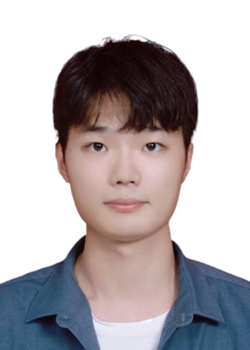

|
Fang, WeiTian（方伟钿）
|
 |
GuangZhou City, China
Master's Degree student,
A post-quantum cryptographer,
Guangdong University of Technology,
Electronics Science and Engineering Lab,
E-mail: lytain2020@gmail.com
|
About me
I received my bachelor's degree in Information Engineering from Guangdong University of Technology in 2021, and have been enrolled in the School of Automation of our university to engage in scientific research. Before that, I joined the IC class of Guangdong University of Technology and devoted myself to learning integrated circuit design. Currently, I am engaged in relevant scientific research work under Professor Xiong Xiaoming's ESELAB team. My main research includes: digital system chip design, computational complex algorithm optimization, and post-quantum cryptography hardware design. In addition, I have been engaged in AI accelerator research for some time.
Research
My research interests include:
System on chip design
Post quantum cryptography
Static time series analysis
Computational complex algorithm
Current work
Side channel attacks and defense policies
Instruction set expansion and hardware/software scheduling based on RISC-V
Reconfigurable design and design space exploration of key modules in post-quantum cryptography
Education
Awards
First Prize for Excellent Student（2021年）
First Prize for Excellent Student（2020年）
National Encouragement Award（2020年）
Second Prize for Excellent student（2019年）
National Encouragement Award（2019年）
Second Prize for Excellent student（2018年）
Competitions
The 2st Prize and Enterprise 1st Prize: 华为杯第五届中国研究生创芯大赛（2022年）
The 1st Prize and Enterprise Special Prize: 全国大学生FPGA创新设计竞赛第五届紫光同创杯（2021年）
The South China division 3rd Prize: 全国大学生集成电路创新创业大赛第五届Digilent杯（2021年）
The South China division 2nd Prize and National 3rd Prize: 全国大学生集成电路创新创业大赛第四届平头哥杯（2020年）
The 1st and 2nd Prize: 蓝桥杯全国软件和信息技术专业人才大赛第十三届和第十届单片机组（2022年和2019年）
The 2nd Prize: 全国大学生数学竞赛广东赛区（2019年）
The 3rd Prize: 全国大学生数学建模竞赛广东赛区（2019年）
The 2nd and 3rd Prize: 第十二届广州大学城校际实验综合技能邀请赛B1和G3（2018年）
The 2nd Prize: 深圳“峰岹杯”电子产品创新大赛（2018年）
The 1st Prize: 广州“邦普-科创杯”电子实践技能竞赛（2018年）
A brief cv.
|